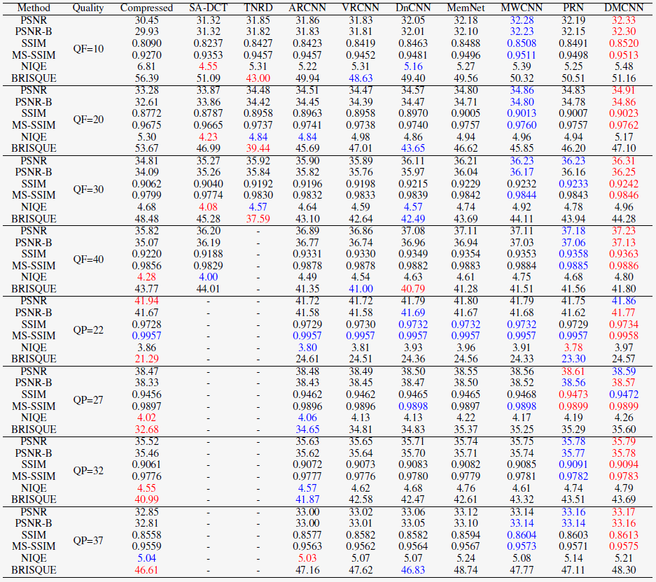

A Comprehensive Benchmark for Single Image Compression Artifacts Reduction
Abstract
We present a comprehensive study and evaluation of existing single image compression artifacts removal algorithms, using a new 4K resolution benchmark including diversified foreground objects and background scenes with rich structures, called Large-scale Ideal Ultra high definition 4K (LIU4K) benchmark. Compression artifacts removal, as a common postprocessing technique, aims at alleviating undesirable artifacts such as blockiness, ringing, and banding caused by quantization and approximation in the compression process. In this work, a systematic listing of the reviewed methods is presented based on their basic models (handcrafted models and deep networks). The main contributions and novelties of these methods are highlighted, and the main development directions, including architectures, multi-domain sources, signal structures, and new targeted units, are summarized. Furthermore, based on a unified deep learning configuration (i.e. same training data, loss function, optimization algorithm, etc.), we evaluate recent deep learning-based methods based on diversified evaluation measures. The experimental results show the state-of-the-art performance comparison of existing methods based on both full-reference, non-reference and task-driven metrics. Our survey would give a comprehensive reference source for future research on single image compression artifacts removal and inspire new directions of the related fields.
Dataset Overview
Figure. 1. Example training set images sampled from LIU4K.
Figure. 2. Example testing set images sampled from LIU4K.
Objective Results
Table 1: Objective evaluations of different methods on liu4k for compression artifacts reduction.
The value in red, and blue colors denote the first, and second best results, respectively.

Subjective Results
Figure. 3. Examples of restored results on a compressed image by JPEG from LIU4K (QF=10).
Download
The images in the dataset are under the license CC BY-NC-ND 4.0.
Thanks to Yueyu Hu and Datong Wei for providing part of the images in the dataset (see list.txt).
Citation
@inproceedings{Liu4K, author={J. Liu and D. Liu and W. Yang and S. Xia and X. Zhang and Y. Dai}, booktitle={arXiv}, title={A Comprehensive Benchmark for Single Image Compression Artifacts Reduction}, year={2019}, }